MYSQL 知识随笔
1、myisam 和 innodb的区别
- myisam引擎是5.1版本之前的默认引擎，支持全文检索、压缩、空间函数等，但是不支持事务和行级锁，所以一般用于有大量查询少量插入的场景来使用，而且myisam不支持外键，并且索引和数据是分开存储的。
- innodb是基于聚簇索引建立的，和myisam相反它支持事务、外键，并且通过MVCC来支持高并发，索引和数据存储在一起。
2、mysql的索引有哪些吧，聚簇和非聚簇索引又是什么
索引按照数据结构来说主要包含B+树和Hash索引。
B+树是左小右大的顺序存储结构，节点只包含id索引列，而叶子节点包含索引列和数据，这种数据和索引在一起存储的索引方式叫做聚簇索引，一张表只能有一个聚簇索引。假设没有定义主键，InnoDB会选择一个唯一的非空索引代替，如果没有的话则会隐式定义一个主键作为聚簇索引。
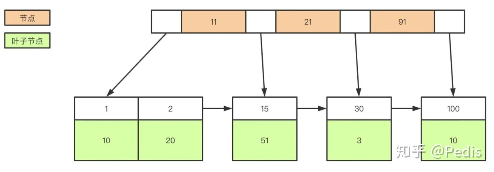
非聚簇索引(二级索引)保存的是主键id值，这一点和myisam保存的是数据地址是不同的。
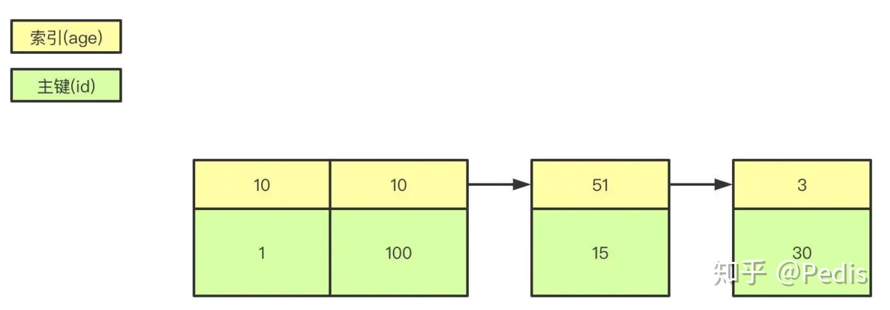
InnoDB和Myisam聚簇和非聚簇索引的区别
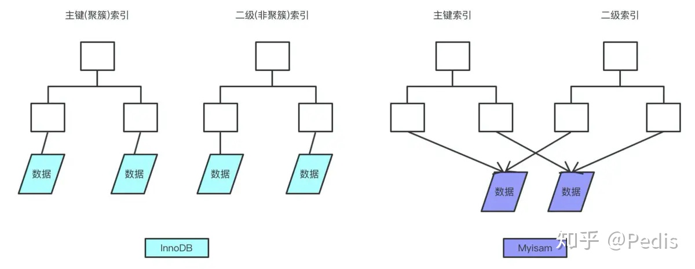
3、覆盖索引和回表
覆盖索引指的是在一次查询中，如果一个索引包含或者说覆盖所有需要查询的字段的值，我们就称之为覆盖索引，而不再需要回表查询。
而要确定一个查询是否是覆盖索引，我们只需要explain sql语句看Extra的结果是否是“Using index”即可。
4、锁的类型有哪些
- mysql锁分为共享锁和排他锁，也叫做读锁和写锁。
读锁是共享的，可以通过lock in share mode实现，这时候只能读不能写。
写锁是排他的，它会阻塞其他的写锁和读锁。
- 从颗粒度来区分，可以分为表锁和行锁两种。
表锁会锁定整张表并且阻塞其他用户对该表的所有读写操作，比如alter修改表结构的时候会锁表。
行锁又可以分为乐观锁和悲观锁，悲观锁可以通过for update实现，乐观锁则通过版本号实现。
5、Mysql悲观锁乐观锁区别与使用场景
乐观锁：顾名思义，对加锁持有一种乐观的态度，即先进行业务操作，不到最后一步不进行加锁，"乐观"的认为加锁一定会成功的，在最后一步更新数据的时候再进行加锁。
悲观锁：悲观锁对数据加锁持有一种悲观的态度。因此，在整个数据处理过程中，将数据处于锁定状态。悲观锁的实现，往往依靠数据库提供的锁机制（也只有数据库层提供的锁机制才能真正保证数据访问的排他性，否则，即使在本系统中实现了加锁机制，也无法保证外部系统不会修改数据）。
5.2、实现方式
乐观锁
-
version方式：一般是在数据表中加上一个数据版本号version字段，表示数据被修改的次数，当数据被修改时，version值会加一。当线程A要更新数据值时，在读取数据的同时也会读取version值，在提交更新时，若刚才读取到的version值为当前数据库中的version值相等时才更新，否则重试更新操作，直到更新成功。
-
CAS（定义见后）操作方式：即compare and swap 或者 compare and set，涉及到三个操作数，数据所在的内存值，预期值，新值。当需要更新时，判断当前内存值与之前取到的值是否相等，若相等，则用新值更新，若失败则重试，一般情况下是一个自旋操作，即不断的重试。
悲观锁
- 是由数据库自己实现了的，要用的时候，我们直接调用数据库的相关语句就可以了（原理：共享资源每次只给一个线程使用，其它线程阻塞，用完后再把资源转让给其它线程），如行锁、读锁和写锁等，都是在操作之前加锁，
- 采取悲观锁策略的一个典型操作就是 select … for undate。通过这种操作，使得从我一开始查看该记录起，这条记录就被上了排它锁，不允许其它会话再对该记录有任何修改。
5.3、使用场景
乐观锁
比较适合读取操作比较频繁的场景，如果出现大量的写入操作，数据发生冲突的可能性就会增大，为了保证数据的一致性，应用层需要不断的重新获取数据，这样会增加大量的查询操作，降低了系统的吞吐量。
悲观锁
比较适合写入操作比较频繁的场景，如果出现大量的读取操作，每次读取的时候都会进行加锁，这样会增加大量的锁的开销，降低了系统的吞吐量。
5.4、特点
- 乐观锁：乐观锁的特点先进行业务操作，不到万不得已不去拿锁。即“乐观”的认为拿锁多半是会成功的，因此在进行完业务操作需要实际更新数据的最后一步再去拿一下锁就好。
- 悲观锁：悲观锁的特点是先获取锁，再进行业务操作，即“悲观”的认为获取锁是非常有可能失败的，因此要先确保获取锁成功再进行业务操作。通常所说的“一锁二查三更新”即指的是使用悲观锁。
5.5、乐观锁的缺点
ABA 问题
如果一个变量V初次读取的时候是A值，并且在准备赋值的时候检查到它仍然是A值，那我们就能说明它的值没有被其他线程修改过了吗？很明显是不能的，因为在这段时间它的值可能被改为其他值，然后又改回A，那CAS操作就会误认为它从来没有被修改过。这个问题被称为CAS操作的 "ABA"问题。
循环时间长开销大
自旋CAS（也就是不成功就一直循环执行直到成功）如果长时间不成功，会给CPU带来非常大的执行开销。
只能保证一个共享变量的原子操作
CAS 只对单个共享变量有效，当操作涉及跨多个共享变量时 CAS 无效。
5.6、悲观锁的缺点
悲观锁的并发性低于乐观锁
6 事务的基本特性和隔离级别
事务基本特性ACID分别是：
原子性：指的是一个事务中的操作要么全部成功，要么全部失败。
一致性：指的是数据库总是从一个一致性的状态转换到另外一个一致性的状态。比如A转账给B100块钱，假设中间sql执行过程中系统崩溃A也不会损失100块，因为事务没有提交，修改也就不会保存到数据库。 他事务是不可见的。
持久性：指的是一旦事务提交，所做的修改就会永久保存到数据库中。
而隔离性有4个隔离级别，分别是：
read uncommit 读未提交，可能会读到其他事务未提交的数据，也叫做脏读。
用户本来应该读取到id=1的用户age应该是10，结果读取到了其他事务还没有提交的事务，结果读取结果age=20，这就是脏读。
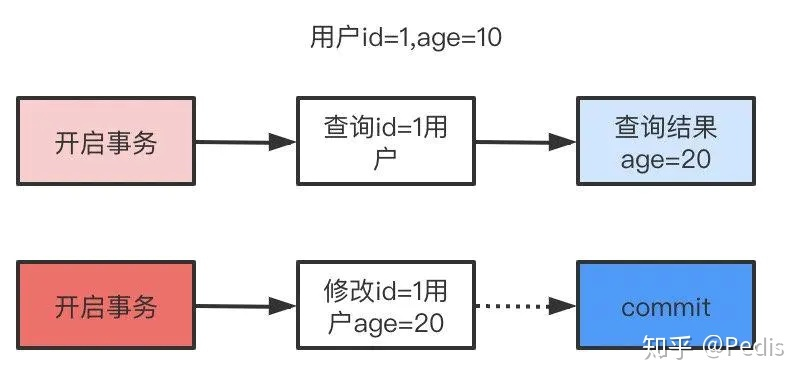
read commit 读已提交，两次读取结果不一致，叫做不可重复读。
不可重复读解决了脏读的问题，他只会读取已经提交的事务。
用户开启事务读取id=1用户，查询到age=10，再次读取发现结果=20，在同一个事务里同一个查询读取到不同的结果叫做不可重复读。
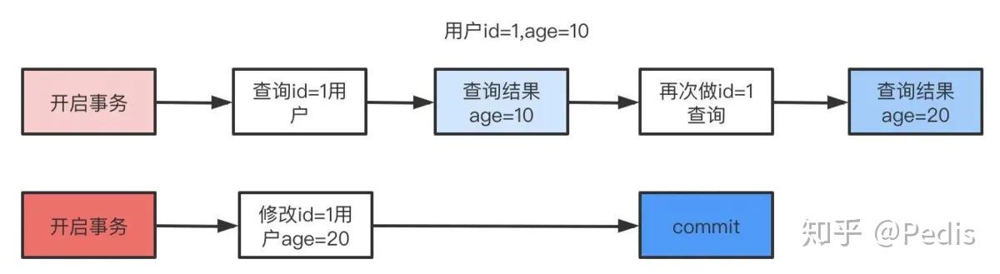
repeatable read 可重复复读，这是mysql的默认级别，就是每次读取结果都一样，但是有可能产生幻读。
serializable 串行，一般是不会使用的，他会给每一行读取的数据加锁，会导致大量超时和锁竞争的问题。
性能越来越差的原因
底层实现原理是因为加锁越来越多
- 读未提交是没有加任何锁的，所以对于它来说也就是没有隔离的效果，所以它的性能也是最好的。
- 对于串行化加的是一把大锁，读的时候加共享锁，不能写，写的时候，加的是排它锁，阻塞其它事务的写入和读取，若是其它的事务长时间不能写入就会直接报超时，所以它的性能也是最差的，对于它来就没有什么并发性可言
- 对于读提交和可重复读，他们俩的实现是兼顾解决数据问题，然后又要有一定的并发行，所以在实现上锁机制会比串行化优化很多，提高并发性，所以性能也会比较好
7 ACID靠什么保证
A原子性
由undo log日志保证，它记录了需要回滚的日志信息，事务回滚时撤销已经执行成功的sql
C一致性
一般由代码层面来保证
I隔离性
由MVCC来保证
D持久性
由内存+redo log来保证，mysql修改数据同时在内存和redo log记录这次操作，事务提交的时候通过redo log刷盘，宕机的时候可以从redo log恢复
8 什么是幻读，什么是MVCC？
要说幻读，首先要了解MVCC，MVCC叫做多版本并发控制，实际上就是保存了数据在某个时间节点的快照。
幻读错误的理解：说幻读是 事务A 执行两次 select 操作得到不同的数据集，即 select 1 得到 10 条记录，select 2 得到 11 条记录。这其实并不是幻读，这是不可重复读的一种，只会在 RU 、RC 级别下出现，而 RR 隔离级别下仅通过MVCC机制就可以避免这种现象。
白话的理解：幻读，并不是说两次读取获取的结果集不同，幻读侧重的方面是某一次的 select 操作得到的结果所表征的数据状态无法支撑后续的业务操作。更为具体一些：select 某记录是否存在，不存在，准备插入此记录，但执行 insert 时发现此记录已存在，无法插入，此时就发生了幻读。
我们每行数实际上隐藏了两列，创建时间版本号，过期(删除)时间版本号，每开始一个新的事务，版本号都会自动递增。
还是拿上面的user表举例子，假设我们插入两条数据，他们实际上应该长这样。
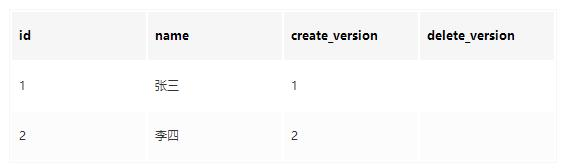
这时候假设小明去执行查询，此时current_version=3
1 | select * from user where id<=3; |
同时，小红在这时候开启事务去修改id=1的记录，current_version=4
1 | update user set name='张三三' where id=1; |
执行成功后的结果是这样的
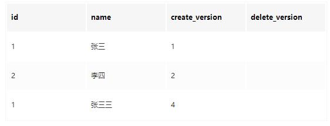
如果这时候还有小黑在删除id=2的数据，current_version=5，执行后结果是这样的。
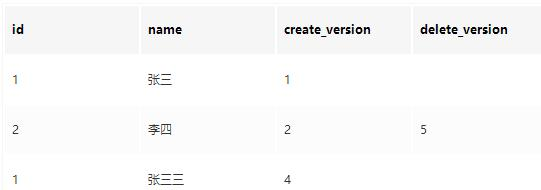
由于MVCC的原理是查找创建版本小于或等于当前事务版本，删除版本为空或者大于当前事务版本，小明的真实的查询应该是这样
1 | select * from user where id<=3 and create_version<=3 and (delete_version>3 or delete_version is null); |
所以小明最后查询到的id=1的名字还是’张三’，并且id=2的记录也能查询到。这样做是为了保证事务读取的数据是在事务开始前就已经存在的，要么是事务自己插入或者修改的。
明白MVCC原理，我们来说什么是幻读就简单多了。举一个常见的场景，用户注册时，我们先查询用户名是否存在，不存在就插入，
假定用户名是唯一索引。
小明开启事务current_version=6查询名字为’王五’的记录，发现不存在。
小红开启事务current_version=7插入一条数据，结果是这样：
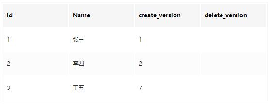
小明执行插入名字’王五’的记录，发现唯一索引冲突，无法插入，这就是幻读。
其实 RR 也是可以避免幻读的，通过对 select 操作手动加 行X锁（SELECT … FOR UPDATE 这也正是 SERIALIZABLE 隔离级别下会隐式为你做的事情），同时还需要知道，即便当前记录不存在，比如 id = 1 是不存在的，当前事务也会获得一把记录锁（因为InnoDB的行锁锁定的是索引，故记录实体存在与否没关系，存在就加 行X锁，不存在就加 next-key lock间隙X锁），其他事务则无法插入此索引的记录，故杜绝了幻读。
mvcc就是为了查询一些正在被另一个事务更新的行，并且可以看到它们被更新之前的值。这是一个可以用来增强并发性的强大的技术，因为这样的一来的话查询就不用等待另一个事务释放锁
一致性非锁定读和锁定读
锁定读
在一个事务中，标准的SELECT语句是不会加锁，但是有两种情况例外。SELECT … LOCK IN SHARE MODE 和 SELECT … FOR UPDATE。
SELECT … LOCK IN SHARE MODE给记录假设共享锁，这样一来的话，其它事务只能读不能修改，直到当前事务提交
SELECT … FOR UPDATE给索引记录加锁，这种情况下跟UPDATE的加锁情况是一样的
一致性非锁定读
consistent read （一致性读），InnoDB用多版本来提供查询数据库在某个时间点的快照。如果隔离级别是REPEATABLE READ，那么在同一个事务中的所有一致性读都读的是事务中第一个这样的读读到的快照；如果是READ COMMITTED，那么一个事务中的每一个一致性读都会读到它自己刷新的快照版本。一致性读不会给它所访问的表加任何形式的锁，因此其它事务可以同时并发的修改它们。
9、什么是间隙锁
间隙锁是可重复读级别下才会有的锁，结合MVCC和间隙锁可以解决幻读的问题。我们还是以user举例，假设现在user表有几条记录
| id | Age |
|---|---|
| 1 | 10 |
| 2 | 20 |
| 3 | 30 |
当我们执行：
1 | begin; |
只有10可以插入成功，那么因为表的间隙mysql自动帮我们生成了区间(左开右闭)
1 | (negative infinity，10],(10,20],(20,30],(30,positive infinity) |
由于20存在记录，所以(10,20]，(20,30]区间都被锁定了无法插入、删除。
如果查询21呢？就会根据21定位到(20,30)的区间(都是开区间)。
需要注意的是唯一索引是不会有间隙索引的。
间隙锁则分为两种：Gap Locks和Next-Key Locks。
- Gap Locks会锁住两个索引之间的区间，比如select * from User where id>3 and id<5 for update，就会在区间（3，5）之间加上Gap Locks。
- Next-Key Locks是Gap Locks+Record Locks形成闭区间锁select * from User where id>=3 and id=<5 for update，就会在区间[3,5]之间加上Next-Key Locks。
10、你们数据量级多大？分库分表怎么做的
分库分表分为垂直和水平两个方式
11、分表后的ID怎么保证唯一性的
因为我们主键默认都是自增的，那么分表之后的主键在不同表就肯定会有冲突了。有几个办法考虑：
设定步长，比如1-1024张表我们分别设定1-1024的基础步长，这样主键落到不同的表就不会冲突了。
分布式ID，自己实现一套分布式ID生成算法或者使用开源的比如雪花算法这种
分表后不使用主键作为查询依据，而是每张表单独新增一个字段作为唯一主键使用，比如订单表订单号是唯一的，不管最终落在哪张表都基于订单号作为查询依据，更新也一样。
12、分表后非sharding_key的查询怎么处理呢
可以做一个mapping表，比如这时候商家要查询订单列表怎么办呢？不带user_id查询的话你总不能扫全表吧？所以我们可以做一个映射关系表，保存商家和用户的关系，查询的时候先通过商家查询到用户列表，再通过user_id去查询。
打宽表，一般而言，商户端对数据实时性要求并不是很高，比如查询订单列表，可以把订单表同步到离线（实时）数仓，再基于数仓去做成一张宽表，再基于其他如es提供查询服务。
数据量不是很大的话，比如后台的一些查询之类的，也可以通过多线程扫表，然后再聚合结果的方式来做。或者异步的形式也是可以的。
13、mysql主从同步怎么做的
首先先了解mysql主从同步的原理
master提交完事务后，写入binlog
slave连接到master，获取binlog
master创建dump线程，推送binglog到slave
slave启动一个IO线程读取同步过来的master的binlog，记录到relay log中继日志中
slave再开启一个sql线程读取relay log事件并在slave执行，完成同步
slave记录自己的binglog
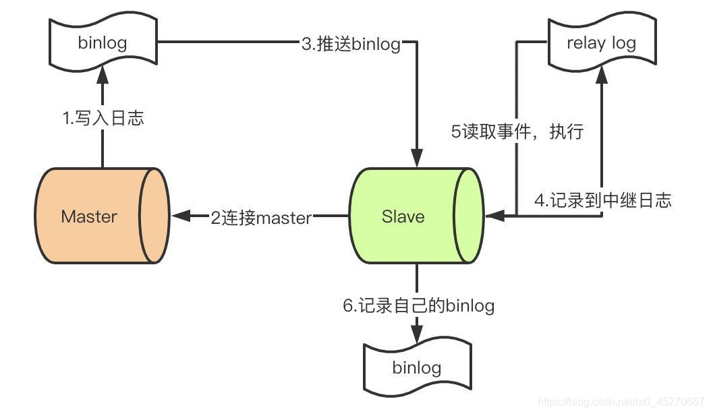
由于mysql默认的复制方式是异步的，主库把日志发送给从库后不关心从库是否已经处理，这样会产生一个问题就是假设主库挂了，从库处理失败了，这时候从库升为主库后，日志就丢失了。由此产生两个概念。
全同步复制
主库写入binlog后强制同步日志到从库，所有的从库都执行完成后才返回给客户端，但是很显然这个方式的话性能会受到严重影响。
半同步复制
和全同步不同的是，半同步复制的逻辑是这样，从库写入日志成功后返回ACK确认给主库，主库收到至少一个从库的确认就认为写操作完成。
14、主从的延迟怎么解决
MySQL主从复制是通过监控和同步主机的binlog日志，然后实施恢复，主从之间延迟的原因有很多：
- 是从服务器监控binlog日志文件，例如每隔1秒更新一次，就
- 是从服务器SQL执行过长，某个SQL要进行锁表；
- 是主服务器事务太大，假设1个大事务在主服务器上执行了1分钟，则需要在最后的提交时间传送到从服务器。主从延迟的时间至少为1分钟，若从服务器执行还需1分钟，则主从复制延迟的最坏情况可能是2分钟。
- 是主服务器大量SQL堆积。
解决办法：
- 如果对实时性要求高的系统，从服务器只当备份使用，数据从缓存返回，降低主服务器压力。
- 使用物理复制。
- 将主服务器的大事务操作，切割成若干个小事务
15、哪些情况下会发生针对该列创建了索引但是在查询的时候并没有使用呢
- 使用不等于查询,
- 列参与了数学运算或者函数
- 在字符串like时左边是通配符.类似于’%aaa’.
- 当mysql分析全表扫描比使用索引快的时候不使用索引.
- 当使用联合索引,前面一个条件为范围查询,后面的即使符合最左前缀原则,也无法使用索引.
16、Hash索引和B+树所有有什么区别或者说优劣
实现原理
- hash索引底层就是hash表,进行查找时,调用一次hash函数就可以获取到相应的键值,之后进行回表查询获得实际数据.
- B+树底层实现是多路平衡查找树.对于每一次的查询都是从根节点出发,查找到叶子节点方可以获得所查键值,然后根据查询判断是否需要回表查询数据.
不同
- hash索引进行等值查询更快(一般情况下),但是却无法进行范围查询
- 而B+树的的所有节点皆遵循(左节点小于父节点,右节点大于父节点),天然支持范围.
- hash索引不支持使用索引进行排序,原理同上.
- hash索引不支持模糊查询以及多列索引的最左前缀匹配.原理也是因为hash函数的不可预测.AAAA和AAAAB的索引没有相关性.
- hash索引任何时候都避免不了回表查询数据,而B+树在符合某些条件(聚簇索引,覆盖索引等)的时候可以只通过索引完成查询.
- hash索引虽然在等值查询上较快,但是不稳定.性能不可预测,当某个键值存在大量重复的时候,发生hash碰撞,此时效率可能极差.而B+树的查询效率比较稳定,对于所有的查询都是从根节点到叶子节点,且树的高度较低.
17、MySQL中的varchar和char有什么区别
- char是一个定长字段,假如申请了char(10)的空间,那么无论实际存储多少内容.该字段都占用10个字符,而varchar是变长的,也就是说申请的只是最大长度,占用的空间为实际字符长度+1,最后一个字符存储使用了多长的空间.
- 在检索效率上来讲,char > varchar,因此在使用中,如果确定某个字段的值的长度,可以使用char,否则应该尽量使用varchar.例如存储用户MD5加密后的密码,则应该使用char.
18、varchar(10)和int(10)代表什么含义
varchar的10代表了申请的空间长度,也是可以存储的数据的最大长度,而int的10只是代表了展示的长度,不足10位以0填充.也就是说,int(1)和int(10)所能存储的数字大小以及占用的空间都是相同的,只是在展示时按照长度展示.
19、MySQL的binlog有有几种录入格式?分别有什么区别?
有三种格式,statement,row和mixed.
statement模式下,记录单元为语句.即每一个sql造成的影响会记录.由于sql的执行是有上下文的,因此在保存的时候需要保存相关的信息,同时还有一些使用了函数之类的语句无法被记录复制.
row级别下,记录单元为每一行的改动,基本是可以全部记下来但是由于很多操作,会导致大量行的改动(比如alter table),因此这种模式的文件保存的信息太多,日志量太大.
mixed. 一种折中的方案,普通操作使用statement记录,当无法使用statement的时候使用row.此外,新版的MySQL中对row级别也做了一些优化,当表结构发生变化的时候,会记录语句而不是逐行记录.
20、超大分页怎么处理
- 数据库层面,这也是我们主要集中关注的(虽然收效没那么大),类似于select * from table where age > 20 limit 1000000,10这种查询其实也是有可以优化的余地的. 这条语句需要load1000000数据然后基本上全部丢弃,只取10条当然比较慢. 当时我们可以修改为select * from table where id in (select id from table where age > 20 limit 1000000,10).这样虽然也load了一百万的数据,但是由于索引覆盖,要查询的所有字段都在索引中,所以速度会很快. 同时如果ID连续的好,我们还可以select * from table where id > 1000000 limit 10,效率也是不错的,优化的可能性有许多种,但是核心思想都一样,就是减少load的数据.
- 从需求的角度减少这种请求….主要是不做类似的需求(直接跳转到几百万页之后的具体某一页.只允许逐页查看或者按照给定的路线走,这样可预测,可缓存)以及防止ID泄漏且连续被人恶意攻击.
- 解决超大分页,其实主要是靠缓存,可预测性的提前查到内容,缓存至redis等k-V数据库中,直接返回即可.
21、关心过业务系统里面的sql耗时吗?统计过慢查询吗?对慢查询都怎么优化过
优化也是针对这三个方向来的
- 首先分析语句,看看是否load了额外的数据,可能是查询了多余的行并且抛弃掉了,可能是加载了许多结果中并不需要的列,对语句进行分析以及重写.
- 分析语句的执行计划,然后获得其使用索引的情况,之后修改语句或者修改索引,使得语句可以尽可能的命中索引
- .如果对语句的优化已经无法进行,可以考虑表中的数据量是否太大,如果是的话可以进行横向或者纵向的分表.
22、什么是存储过程？有哪些优缺点
存储过程是一些预编译的SQL语句。
- 存储过程可以说是一个记录集，它是由一些T-SQL语句组成的代码块，这些T-SQL语句代码像一个方法一样实现一些功能（对单表或多表的增删改查），然后再给这个代码块取一个名字，在用到这个功能的时候调用他就行了。
- 存储过程是一个预编译的代码块，执行效率比较高,一个存储过程替代大量T_SQL语句 ，可以降低网络通信量，提高通信速率,可以一定程度上确保数据安全
23、日志的Redo/Undo机制
- Redo log用来记录某数据块被修改后的值，可以用来恢复未写入 data file 的已成功事务更新的数据；
- Undo log是用来记录数据更新前的值，保证数据更新失败能够回滚。
具体的实现流程
假如某个时刻数据库崩溃，在崩溃之前有事务A和事务B在执行，事务A已经提交，而事务B还未提交。当数据库重启进行 crash-recovery 时，就会通过Redo log将已经提交事务的更改写到数据文件，而还没有提交的就通过Undo log进行roll back。
24、mysql中锁的概念
- 共享锁是针对同一份数据，多个读操作可以同时进行，简单来说即读加锁，不能写并且可并行读；
- 排他锁针对写操作，假如当前写操作没有完成，那么它会阻断其它的写锁和读锁，即写加锁，其它读写都阻塞。
行锁和表锁，是从锁的粒度上进行划分的
- 行锁锁定当前数据行，锁的粒度小，加锁慢，发生锁冲突的概率小，并发度高，行锁也是MyISAM和InnoDB的区别之一，InnoDB支持行锁并且支持事务 。
- 表锁则锁的粒度大，加锁快，开销小，但是锁冲突的概率大，并发度低
间隙锁则分为两种：Gap Locks和Next-Key Locks。
-
Gap Locks会锁住两个索引之间的区间，比如select * from User where id>3 and id<5 for update，就会在区间（3，5）之间加上Gap Locks。
-
Next-Key Locks是Gap Locks+Record Locks形成闭区间锁select * from User where id>=3 and id=<5 for update，就会在区间[3,5]之间加上Next-Key Locks。
Mysql中什么时候会加锁
在数据库的增、删、改、查中，只有增、删、改才会加上排它锁，而只是查询并不会加锁，只能通过在select语句后显式加lock in share mode或者for update来加共享锁或者排它锁。
25、MVCC（多版本并发控制）原理
实现MVCC时用到了一致性视图，用于支持读提交和可重复读的实现
在实现可重复读的隔离级别，只需要在事务开始的时候创建一致性视图，也叫做快照，之后的查询里都共用这个一致性视图，后续的事务对数据的更改是对当前事务是不可见的，这样就实现了可重复读。
而读提交，每一个语句执行前都会重新计算出一个新的视图，这个也是可重复读和读提交在MVCC实现层面上的区别
快照（视图）在MVCC底层是怎么工作的
在InnoDB 中每一个事务都有一个自己的事务id，并且是唯一的，递增的 。
对于Mysql中的每一个数据行都有可能存在多个版本，在每次事务更新数据的时候，都会生成一个新的数据版本，并且把自己的数据id赋值给当前版本的row trx_id。
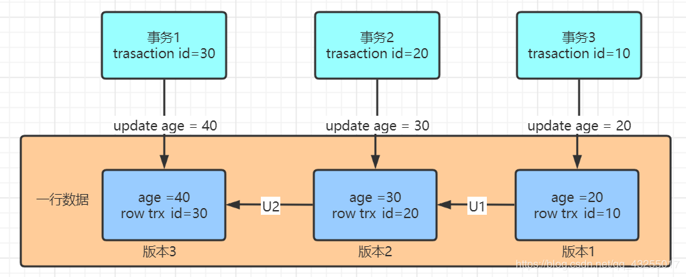
如图中所示，假如三个事务更新了同一行数据，那么就会有对应的三个数据版本。
实际上版本1、版本2并非实际物理存在的，而图中的U1和U2实际就是undo log，这v1和v2版本是根据当前v3和undo log计算出来的。
对于一个快照来说，你知道它要遵循什么规则
对于一个事务视图来说除了对自己更新的总是可见，另外还有三种情况：版本未提交的，都是不可见的；版本已经提交，但是是在创建视图之后提交的也是不可见的；版本已经提交，若是在创建视图之前提交的是可见的。
26、两个事务执行写操作，又怎么保证并发呢
在update的where后的条件是在有索引的情况下
假如事务1和事务2都要执行update操作，事务1先update数据行的时候，先回获取行锁，锁定数据，当事务2要进行update操作的时候，也会取获取该数据行的行锁，但是已经被事务1占有，事务2只能wait。若是事务1长时间没有释放锁，事务2就会出现超时异常 。
在update的where后的条件是在没有索引的条件下
若是没有索引的条件下，就获取所有行，都加上行锁，然后Mysql会再次过滤符合条件的的行并释放锁，只有符合条件的行才会继续持有锁。这样的性能消耗也会比较大
27、InnoDB引擎的4大特性
插入缓冲（insert buffer)
于非聚集索引的插入或更新操作，不是每一次直接插入到索引页中，而是先判断插入的非聚集索引页是否在缓冲池中。若在，则直接插入；若不在，则先放入到一个Insert Buffer对象中
二次写(double write)
可能InnoDB正在写入某个页到表中，而这个页只写了一部分，比如16KB的页，只写了前4KB，之后就发生了宕机，这种情况被称为“部分写失效”。如果发生写失效，可以通过重做日志进行恢复
应用重做日志前，用户需要一个页的副本，当写入失效发生时，先通过页的副本来还原该页，再进行重做，这就是doublewrite
自适应哈希索引(ahi)
InnoDB会监控对表上各索引页的查询。如果观察到建立哈希索引可以带来速度提升，则建立哈希索引，称之为自适应哈希索引（AHI）
预读(read ahead)
InnoDB使用两种预读算法来提高I/O性能：线性预读（linear read-ahead）和随机预读（randomread-ahead）
28、创建索引的原则
- 最左前缀匹配原则，组合索引非常重要的原则，mysql会一直向右匹配直到遇到范围查询(>、<、between、like)就停止匹配，比如a = 1 and b = 2 and c > 3 and d = 4 如果建立(a,b,c,d)顺序的索引，d是用不到索引的，如果建立(a,b,d,c)的索引则都可以用到，a,b,d的顺序可以任意调整。较频繁作为查询条件的字段才去创建索引
- 更新频繁字段不适合创建索引
- 若是不能有效区分数据的列不适合做索引列(如性别，男女未知，最多也就三种，区分度实在太低)
- 尽量的扩展索引，不要新建索引。比如表中已经有a的索引，现在要加(a,b)的索引，那么只需要修改原来的索引即可。
- 定义有外键的数据列一定要建立索引。
- 对于那些查询中很少涉及的列，重复值比较多的列不要建立索引。
- 对于定义为text、image和bit的数据类型的列不要建立索引。
29、百万级别或以上的数据如何删除
- 先删除索引（此时大概耗时三分多钟）
- 然后删除其中无用数据（此过程需要不到两分钟）
- 删除完成后重新创建索引(此时数据较少了)创建索引也非常快，约十分钟左右。
30、B树和B+树的区别
- 在B树中，你可以将键和值存放在内部节点和叶子节点；但在B+树中，内部节点都是键，没有值，叶子节点同时存放键和值。
- B+树的叶子节点有一条链相连，而B树的叶子节点各自独立。
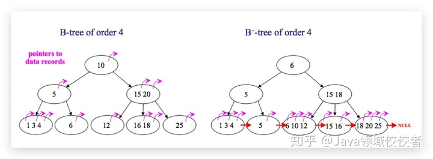
31、数据库为什么使用B+树而不是B树
- B树只适合随机检索，而B+树同时支持随机检索和顺序检索；
- B+树空间利用率更高，可减少I/O次数，磁盘读写代价更低。
- B+树的查询效率更加稳定。B树搜索有可能会在非叶子结点结束，越靠近根节点的记录查找时间越短，只要找到关键字即可确定记录的存在，其性能等价于在关键字全集内做一次二分查找。而在B+树中，顺序检索比较明显，随机检索时，任何关键字的查找都必须走一条从根节点到叶节点的路，所有关键字的查找路径长度相同，导致每一个关键字的查询效率相当。
- B-树在提高了磁盘IO性能的同时并没有解决元素遍历的效率低下的问题。B+树的叶子节点使用指针顺序连接在一起，只要遍历叶子节点就可以实现整棵树的遍历。而且在数据库中基于范围的查询是非常频繁的，而B树不支持这样的操作。
- 增删文件（节点）时，效率更高。因为B+树的叶子节点包含所有关键字，并以有序的链表结构存储，这样可很好提高增删效率。
32、什么是死锁？怎么解决？
死锁是指两个或多个事务在同一资源上相互占用，并请求锁定对方的资源，从而导致恶性循环的现象。
常见的解决死锁的方法
- 如果不同程序会并发存取多个表，尽量约定以相同的顺序访问表，可以大大降低死锁机会。
- 在同一个事务中，尽可能做到一次锁定所需要的所有资源，减少死锁产生概率；
- 对于非常容易产生死锁的业务部分，可以尝试使用升级锁定颗粒度，通过表级锁定来减少死锁产生的概率；
如果业务处理不好可以用分布式事务锁或者使用乐观锁
33、为什么要使用视图？什么是视图
为了提高复杂SQL语句的复用性和表操作的安全性，MySQL数据库管理系统提供了视图特性。所谓视图，本质上是一种虚拟表，在物理上是不存在的，其内容与真实的表相似，包含一系列带有名称的列和行数据
34、超键、候选键、主键、外键分别是什么
超键：在关系中能唯一标识元组的属性集称为关系模式的超键。一个属性可以为作为一个超键，多个属性组合在一起也可以作为一个超键。超键包含候选键和主键。
候选键：是最小超键，即没有冗余元素的超键。
主键：数据库表中对储存数据对象予以唯一和完整标识的数据列或属性的组合。一个数据列只能有一个主键，且主键的取值不能缺失，即不能为空值（Null）。
外键：在一个表中存在的另一个表的主键称此表的外键。
35、 mysql中 in 和 exists 区别
mysql中的in语句是把外表和内表作hash 连接，而exists语句是对外表作loop循环，每次loop循环再对内表进行查询。
一直大家都认为exists比in语句的效率要高，这种说法其实是不准确的。这个是要区分环境的。
- 如果查询的两个表大小相当，那么用in和exists差别不大。如果两个表中一个较小，一个是大表，则子查询表大的用exists，子查询表小的用in。
- not in 和not exists：如果查询语句使用了not in，那么内外表都进行全表扫描，没有用到索引；
- 而not extsts的子查询依然能用到表上的索引。所以无论那个表大，用not exists都比not in要快。
36、drop、delete与truncate的区别
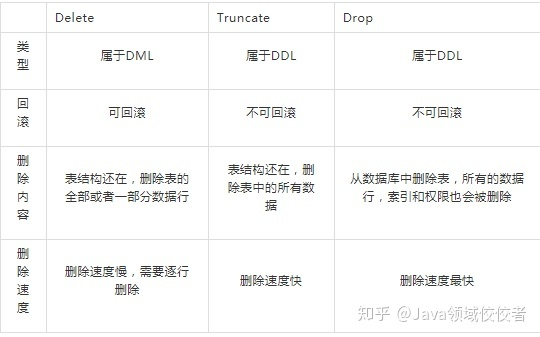
37、SQL的生命周期
- 应用服务器与数据库服务器建立一个连接
- 数据库进程拿到请求sql
- 解析并生成执行计划，执行
- 读取数据到内存并进行逻辑处理
- 通过步骤一的连接，发送结果到客户端
- 关掉连接，释放资源
38、大表数据查询，怎么优化
- 优化shema、sql语句+索引；
- 第二加缓存，memcached, redis；
- 主从复制，读写分离；
- 垂直拆分，根据你模块的耦合度，将一个大的系统分为多个小的系统，也就是分布式系统；
- 水平切分，针对数据量大的表，这一步最麻烦，最能考验技术水平，要选择一个合理的sharding key, 为了有好的查询效率，表结构也要改动，做一定的冗余，应用也要改，sql中尽量带sharding key，将数据定位到限定的表上去查，而不是扫描全部的表；
39、MySQL的复制原理以及流程
主从复制
将主数据库中的DDL和DML操作通过二进制日志（BINLOG）传输到从数据库上，然后将这些日志重新执行（重做）；从而使得从数据库的数据与主数据库保持一致。
主从复制的作用
- 主数据库出现问题，可以切换到从数据库。
- 可以进行数据库层面的读写分离。
- 可以在从数据库上进行日常备份。
MySQL主从复制解决的问题
- 数据分布：随意开始或停止复制，并在不同地理位置分布数据备份负载均衡：降低单个服务器的压力
- 高可用和故障切换：帮助应用程序避免单点失败
- 升级测试：可以用更高版本的MySQL作为从库
MySQL主从复制工作原理
- 在主库上把数据更高记录到二进制日志
- 从库将主库的日志复制到自己的中继日志
- 从库读取中继日志的事件，将其重放到从库数据中
基本原理流程，3个线程以及之间的关联
主：binlog线程——记录下所有改变了数据库数据的语句，放进master上的binlog中；
从：io线程——在使用start slave 之后，负责从master上拉取 binlog 内容，放进自己的relay log中；
从：sql执行线程——执行relay log中的语句；
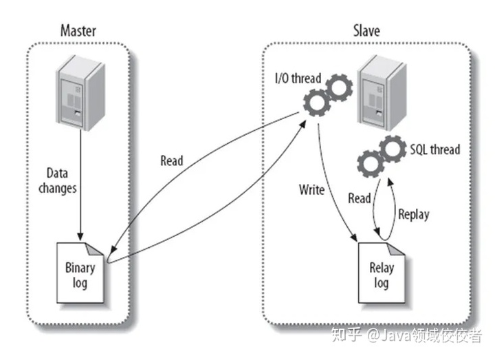
第一步：master在每个事务更新数据完成之前，将该操作记录串行地写入到binlog文件中。
第二步：salve开启一个I/O Thread，该线程在master打开一个普通连接，主要工作是binlog dump process。如果读取的进度已经跟上了master，就进入睡眠状态并等待master产生新的事件。I/O线程最终的目的是将这些事件写入到中继日志中。
第三步：SQL Thread会读取中继日志，并顺序执行该日志中的SQL事件，从而与主数据库中的数据保持一致。
40、数据表损坏的修复方式有哪些
使用 myisamchk 来修复，具体步骤：
1）修复前将mysql服务停止。
2）打开命令行方式，然后进入到mysql的/bin目录。
3）执行myisamchk –recover 数据库所在路径/*.MYI
41、MySQL的索引要使用B+树而不是其它树形结构
因为B树不管叶子节点还是非叶子节点，都会保存数据，这样导致在非叶子节点中能保存的指针数量变少（有些资料也称为扇出），指针少的情况下要保存大量数据，只能增加树的高度，导致IO操作变多，查询性能变低；
SQL执行顺序
SQL的执行顺序：from—where–group by—having—select—order by
InnoDB的内存架构
主要分为三大块，缓冲池（Buffer Pool）、重做缓冲池（Redo Log Buffer）和额外内存池
缓冲池
InnoDB为了做数据的持久化，会将数据存储到磁盘上。但是面对大量的请求时，CPU的处理速度和磁盘的IO速度之间差距太大，为了提高整体的效率， InnoDB引入了缓冲池。
当有请求来查询数据时，如果缓存池中没有，就会去磁盘中查找，将匹配到的数据放入缓存池中。同样的，如果有请求来修改数据，MySQL并不会直接去修改磁盘，而是会修改已经在缓冲池的页中的数据，然后再将数据刷回磁盘，这就是缓冲池的作用，加速读，加速写，减少与磁盘的IO交互。
缓冲池说白了就是把磁盘中的数据丢到内存，那既然是内存就会存在没有内存空间可以分配的情况。所以缓冲池采用了LRU算法，在缓冲池中没有空闲的页时，来进行页的淘汰。但是采用这种算法会带来一个问题叫做缓冲池污染。
当你在进行批量扫描甚至全表扫描时，可能会将缓冲池中的热点页全部替换出去。这样以来可能会导致MySQL的性能断崖式下降。所以InnoDB对LRU做了一些优化，规避了这个问题。
图片来源网络,侵权删除.